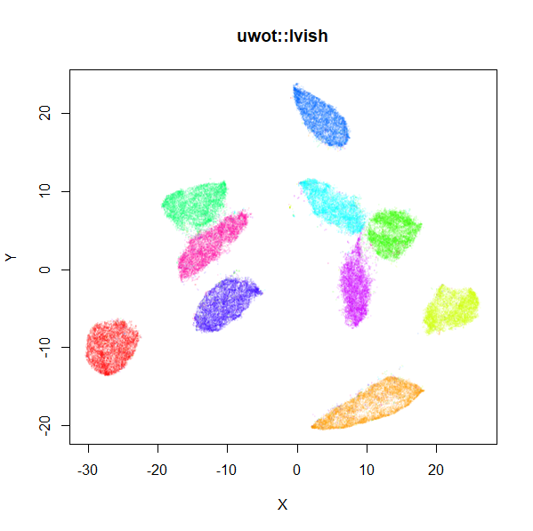
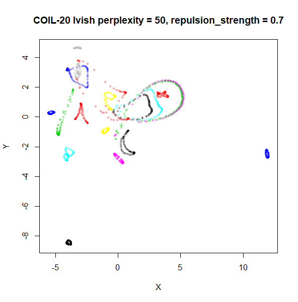

A LargeVis-ish method
The LargeVis method
(see also its github), is in many
respects a bridge between t-SNE and UMAP. It’s sufficiently close to
UMAP that uwot also offers a LargeVis-like method,
lvish:
# perplexity, init and n_epoch values shown are the defaults
# use perplexity instead of n_neighbors to control local neighborhood size
mnist_lv <- lvish(mnist, perplexity = 50, init = "lvrand", n_epochs = 5000,
verbose = TRUE)
# Make hilarious Lembas bread jokeAlthough lvish is like the real LargeVis in terms of the
input weights, output weight function and gradient, and so should give
results that resemble the real thing, note that:
- Like the real LargeVis, matrix input data is normalized by centering
each column and then the entire matrix is scaled by dividing by the
maximum absolute value. This differs from
umap, where no scaling is carried out. Scaling can be controlled by thescaleparameter. - Nearest neighbor results are not refined via the neighbor expansion
method. The
search_kparameter is twice as large than Annoy’s default to compensate. - The other nearest neighbor index parameter,
n_trees, is not dynamically chosen based on data set size. In LargeVis, it ranges between 10 (for N < 100,000) and 100 (for N > 5,000,000). Thelvishdefault of 50 would cover datasets up to N = 5,000,000, and combined with the defaultsearch_k, seems suitable for the datasets I’ve looked at. - Negative edges are generated by uniform sampling of vertexes rather than their degree ^ 0.75.
- The default number of epochs is dataset-dependent, to generate the
same number of edge samples that would be used by the default settings
of the reference LargeVis implementation. This normally results in a
substantially longer run time than for
umap. You may be able to get away with fewer epochs, and using the UMAP initialization ofinit = "spectral", rather than the default Gaussian random initialization (init = "lvrand") can help.
The left-hand image below is the result of running the official
LargeVis implementation on MNIST. The image on the right is that from
running lvish with its default settings (apart from setting
n_threads = 8). Given they were both initialized from
different random configurations, there’s no reason to believe they would
be identical, but they look pretty similar:
 |
 |
Because the default number of neighbors is 3 times the
perplexity, and the default perplexity = 50,
the nearest neighbor search needs to find 150 nearest neighbors per data
point, an order of magnitude larger than the UMAP defaults. This leads
to a less sparse input graph and hence more edges to sample. Combined
with the increased number of epochs, expect lvish to be
slower than umap: with default single-threaded settings, it
took about 20 minutes to embed the MNIST data under the same
circumstances as described in the “Performance” section. With
n_threads = 4, it took 7 minutes. In addition, storing
those extra edges requires a lot more memory than the umap
defaults: my R session increased by around 3.2 GB, versus 1 GB for
umap.
As an alternative to the usual Gaussian input weight function, you
can use the k-nearest neighbor graph itself, by setting
kernel = "knn". This will give each edge between neighbors
a uniform weight equal to 1/perplexity, which leads to each
row’s probability distribution having the target
perplexity. This matrix will then be symmetrized in the
usual way. The advantage of this is that the number of neighbors is
reduced to the same as the perplexity (indeed, the
n_neighbors parameter is ignored with this setting), and
leads to less memory usage and a faster runtime. You can also get away
with setting the perplexity to a much lower value than usual with this
kernel (e.g. perplexity = 15) and get closer to UMAP’s
performance. If you use the default LargeVis random initialization, you
will still need more epochs than UMAP, but you can still expect to see a
big improvement. Something like the following works for MNIST:
mnist_lv <- lvish(mnist, kernel = "knn", perplexity = 15, n_epochs = 1500,
init = "lvrand", verbose = TRUE)Some More Results
For details on the datasets, and to compare with the output of UMAP and t-SNE, see the UMAP examples gallery.
Gaussian Perplexity
As mentioned above, by default lvish uses a Gaussian
similarity function to determine perplexities, just like t-SNE. These
results are given below.
There are two images per dataset. The left-hand image uses a perplexity of 15, which is similar to the sort of settings UMAP uses. The right-hand image is for a perplexity of 50, which is the LargeVis default.
The only other non-default settings was to use
pca = 100, which reduces the input dimensionality to
100.
iris_lv15 <- lvish(iris, pca = 100, perplexity = 15)
iris_lv50 <- lvish(iris, pca = 100, perplexity = 50)Note that by default lvish uses a random initialization
and a much larger number of epochs to match the LargeVis defaults. This
makes the optimization take a lot longer than UMAP. LargeVis uses
multiple threads during the optimization phase, but lvish
does not, to ensure reproducibility of results with a fixed random seed.
To get multi-threaded performance like LargeVis, add the option,
n_sgd_threads = "auto", e.g.:
iris_lv15 <- lvish(iris, pca = 100, perplexity = 15, n_sgd_threads = "auto")I would also suggest that you fix the number of epochs to a smaller value initially and see if that provides an adequate visualization.
iris_lv15 <- lvish(iris, pca = 100, perplexity = 15, n_sgd_threads = "auto", n_epochs = 500)


macosko2015
 |
 |
Default initialization in lvish, as with LargeVis and
t-SNE, is from a random distribution. As with t-SNE, you can see one
issue with that is that sometimes clusters get split up by another
cluster and are unable to re-merge. MNIST is the easiest example image
to see this in.
In general, there’s not a huge difference in the effect of increasing
perplexity, for larger datasets. For smaller datasets it’s apparent that
the resulting clusters tend to be more spread out with larger perplexity
values. The norb (small NORB)
dataset shows an obvious difference, where the
perplexity = 15 results are clearly too low, and break up
the structures that are apparent at perplexity = 50. A
similar effect is seen when using UMAP, so I don’t think this is due to
the random initialization of lvish in this case. A
contributing factor is likely to be that the initial PCA dimensionality
reduction to 100 dimensions is too aggressive for NORB and reduces the
nearest neighbor accuracy, which is recovered at higher perplexities (as
this requires finding more near neighbors).
On the other hand, it’s hard to see what’s going on with the
coil20 and especially the coil100 results. If
you could see what was going on from the static images above,
it would be apparent that, in contrast to the norb results,
the perplexity = 50 results are too high here, and the loop
structure of the clusters gets broken up.
The coil100 and coil20 results show an
issue with using LargeVis (and UMAP) that isn’t normally a problem with
t-SNE: the extra repulsion in their cost function can often spread the
data quite far apart compared to the cluster sizes. t-SNE has the
opposite problem of the clusters expanding into a large circular form
which makes discerning clusters harder as the datasets get larger, but
in a single static plot, I find the t-SNE results to be easier to
examine. For UMAP and lvish, you may have to resort to more
interactive means of examining the data, such as using the
embed_plotly function in vizier.
An alternative for lvish is to modify the
repulsion_strength parameter (referred to as
gamma in LargeVis). The default value, 7 is
taken from the LargeVis paper but seems to have been chosen
empiricially. Here are results for coil20 and
perplexity = 50 with the repulsion reduced to
repulsion_strength = 0.7 in the left image, and
repulsion_strength = 0.07 on the right:
|  |  |
This helps a bit, but there are limits: the blue cluster on the right
remains an outlier, and reducing the repulsion_strength too
far causes some of the loops to shrink, as can be seen with the outlying
blue and black clusters for the right-hand plot.
KNN Perplexity
As an alternative to using the Gaussian perplexities, you could use the k-nearest neighbor graph directly, which involves setting the similarity of with to 1 if is in the k-nearest neighbors of , and 0 otherwise. The usual t-SNE procedure of symmetrizing (but not the normalization step) is then carried out. There are some t-SNE implementations which use kNN-derived perplexities, e.g. the majorization-minimization approach of Yang and co-workers.
The advantage of using the kNN kernel is that you get a sparser set
of edges, which due to lvish using the same formula for
determining the number of iterations required, results in a shorter run
time.
For the results below the kNN perplexities were used by setting
kernel = "knn"
iris_lv15k <- lvish(iris, pca = 100, perplexity = 15, kernel = "knn")
iris_lv50k <- lvish(iris, pca = 100, perplexity = 50, kernel = "knn")For comparison, the top row of images use the same settings as in the
previous section with Gaussian perplexities, and the bottom row show the
results for using the kNN kernel. The run time for each embedding is
given in the image. I used version 0.1.3 of uwot from
CRAN.


Conclusions
For smaller datasets, the kNN kernel gives noticeably different
results to the Gaussian perplexity, particularly for
perplexity = 50. For iris, s1k
and oli, the trend seems to be that the results are more
expanded with the kNN kernel. For frey, coil20
and coil100, the clusters are more separated.
For the larger datasets, the difference in behavior is less
pronounced, although the macosko2015 results show a larger
cluster separation as well.
The good new is that for all cases, the run times are noticeably reduced.
So for larger datasets, using kernel = "knn" seems to be
an ok choice for reducing the runtime of lvish. It also
seems that you may want to use a smaller value of the
perplexity than you would with a Gaussian perplexity, which
further reduces the runtime. For smaller datasets, results are more
mixed. It seems that a smaller perplexity in this case is
definitely to be preferred.